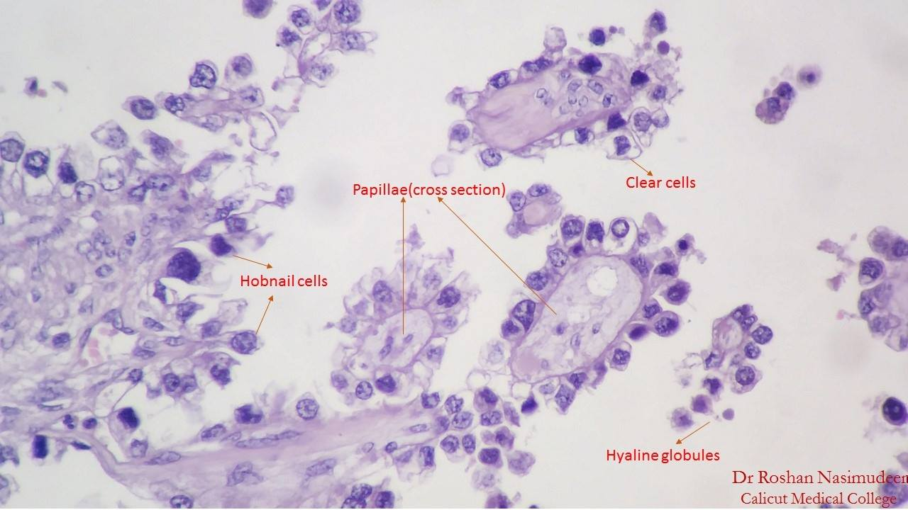
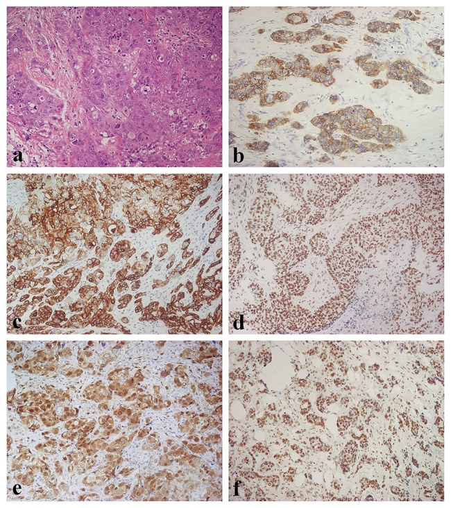

LOOK BEYOND THE FAMILIAR
Not every cancer receives the same attention. Some cancer types and subtypes remain less understood, less discussed or less represented in everyday cancer conversations.
Every diagnosis deserves understanding. Every question deserves an informed answer.
Cancer is not one disease. Even cancers that develop in the same organ can have different characteristics, patterns of behaviour and treatment approaches. Understanding these differences can help patients have more informed conversations with their healthcare teams and find information relevant to their diagnosis.
EXPLORE THE LIBRARY
Explore educational guides covering less commonly discussed cancer types and distinct cancer subtypes. Learn what makes each diagnosis different, how it is identified and what treatment and research may involve.

OVARIAN CANCER SUBTYPE
Understand this relatively uncommon subtype of epithelial ovarian cancer, its distinctive characteristics, diagnosis and treatment.
Explore cancer guide →
BREAST CANCER SUBTYPE
Learn how this distinct breast cancer subtype is identified, how it differs from other breast cancers and what treatment approaches may be considered.
Explore cancer guide →Scientific understanding continues to evolve. Research into cancer subtypes, new treatment approaches and clinical trials may expand what is known about these diagnoses. Our guides distinguish established treatments from emerging research and clinical-trial findings, so information is presented with context and without false promises.
A GROWING LIBRARY
Beyond the Common will continue to expand to include other rare, less-discussed and underrepresented cancers and subtypes affecting women.